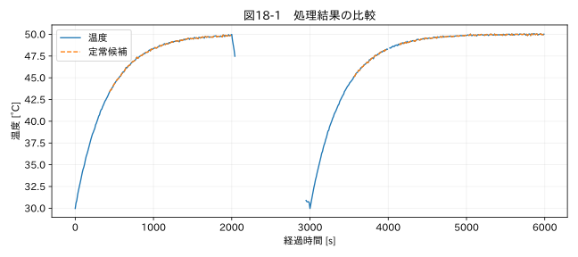

第V部 複数データの統合と品質管理 / 第18章
この章の節
試験条件の変更・運転モードを識別する
学習目標
イベントログから連続した運転区間を作り、定常・過渡を目的に応じて定義する。モードをまたぐ補間や外れ値判定を防ぐ。
18.1 全期間を一つの分布にしない
温度試験には起動、昇温、保持、停止、冷却がある。全期間の平均と標準偏差から外れ値を探すと、正しい起動温度が異常扱いになることがある。運転中の正常範囲と停止中の正常範囲は異なる。
教材 07_modes.csv は2000秒で停止し、3000秒で再起動する。停止中の温度は冷却するが、その多くは測定されていない。二つのrun区間を同じ名前だからと連結して補間すれば、停止中をまたいでしまう。モード名と連続区間IDを別に持つ必要がある。
18.2 イベントログを状態へ展開する
イベント時刻と新しい状態の表がある場合、観測時刻に対して過去の最後のイベントを割り当てる。変更時刻を含む区間を [変更時刻, 次の変更時刻) とするかなど、境界を定義する。試験開始前の状態が不明なら、最初のイベントより前をunknownとする。後のイベントで埋め戻すと、未来の状態を過去へ割り当ててしまう。
ログにない停止を波形から推定する場合もあるが、推定モードと確定イベントを区別する。電流ゼロだけでは停電、センサー断線、通信欠損が区別できない。複数信号や装置状態と照合する。
18.3 定常状態の操作的定義
定常とは、何も変わらないという絶対的な状態ではない。必要な評価時間内に、対象量の平均や変動幅が許容範囲に収まる状態として定義する。例えば「120秒の窓で温度変化率の最大絶対値が0.03 °C/s未満」は一つの演習規則だが、厳密な統計的定常性や規格の安定条件を保証しない。
差分で傾きを計算するとノイズが増幅される。温度の測定誤差が独立で標準偏差σなら、差分の誤差標準偏差は√2σ、さらに時間差で割ると√2σ/Δtになる。短いΔtほど傾きのノイズが大きい。窓内の直線回帰の傾きや、一定時間の最大−最小を併用する方法がある。
18.4 ヒステリシスと持続条件
閾値近くで状態が毎秒切り替わるなら、入る閾値と出る閾値を分けるヒステリシス、または条件が連続して成立する時間を設ける。例えば電流1.0 A超が3秒続けばrun、0.5 A未満が5秒続けばstopという規則を作れる。ただし値は装置ごとに検証する演習設定である。
変化点検出では、平均、分散、傾きなどの変化を探す。変化点が検出されても、試験条件の変更、製品異常、センサー異常のどれかは別に判断する。解析全体から最適な区間を決めるオフライン手法は、リアルタイムの検出時刻と一致しないことがある。
関連する詳細実験は実践補講に掲載。入力形式・同期・補間・校正・多変量・チャンク境界を扱う。
実行するコードと結果
run.py · 共通処理の全ソース
教材フォルダで python examples/chapter18/run.py を実行。以下は省略のないスクリプト。共通モジュールは教材一式に含む。
from pathlib import Path
import sys
ROOT=Path(__file__).resolve().parents[2]
sys.path.insert(0,str(ROOT))
sys.path.insert(0,str(ROOT/'examples'))
import numpy as np
import pandas as pd
from common import load,truth,seconds,plot
from tsclean.core import numeric,timestamps,time_flags,hampel,freeze_candidates,interpolate_short,compare
df=load('07_modes');segment=df['mode'].ne(df['mode'].shift()).cumsum()
print(df.assign(segment=segment).groupby(['segment','mode'])['測定値'].agg(['count','mean','max']).to_string())
dt=10;rate=df['測定値'].diff()/dt
steady=rate.abs().rolling(12,min_periods=12).max().lt(.03)&df['mode'].eq('run')
print('演習基準の定常候補点数:',int(steady.sum()))
plot(18,seconds(df),{'温度':df['測定値'],'定常候補':df['測定値'].where(steady)},'温度 [°C]')
検証環境での実行結果を開く
count mean max
segment mode
1 run 200 45.973092 49.961706
2 stop 10 39.745374 49.983835
3 run 298 47.294873 50.071068
演習基準の定常候補点数: 386

18.5 モード別の比較
図18-1の定常候補は、値が有効で演習の傾き条件を満たす区間に付く。停止中に欠けた値は定常とは判定しない。再起動後のrunを最初のrunと比較するときは、開始後の経過時間、環境温度、負荷条件も合わせる。
条件変更の直後にはセンサー応答遅れや制御の過渡がある。イベント時刻で区切るだけで、その直後を定常と認めてはいけない。除外する立ち上がり時間は対象の応答と試験目的に基づき、結果が都合よくなるまで変えない。
演習
基礎演習
連続区間IDが三つになり、run、stop、runの順であることを確認する。
応用演習
定常判定の窓を12点から30点へ変えた場合、判定開始時刻と未評価範囲はどう変わるか。
実務演習
負荷を変更した記録があるが、装置へ実際に反映されたのは数秒後だった。どちらを境界時刻として保存するか。
演習解答・解説を表示する
基礎：三つの区間になる。runを二つの連続区間に分けることが重要である。
応用：より長い履歴を要求するため、開始直後の評価待ちが長くなる。長い窓は一時的な乱れを含みやすく、定常判定が遅れることもある。
実務：指令時刻と実反映時刻を別列で保存する。制御の応答評価には両者が必要で、都合のよい方だけを残さない。
章末まとめ
モードはクリーニングの条件であると同時に、解析対象の一部でもある。ログ由来と推定を区別し、連続区間と境界の意味を保存する。